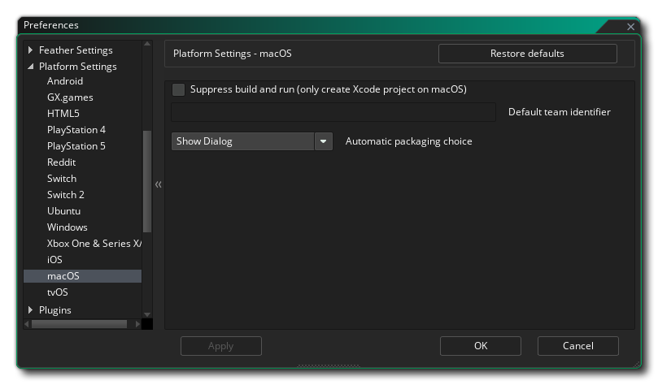

macOS首选项
macOS 偏好有以下选项。

- 默认的团队标识符。在这里你可以添加你的默认团队标识符，由苹果分配给你。当你的游戏文件被发送到Xcode 来构建应用程序时，这个团队标识将被使用，并允许Xcode 来生成所需的签名证书。请注意，这个设置将默认应用于所有为macOS 构建的游戏，但它可以在每个项目的基础上从常规macOS 游戏选项中被覆盖。
- 自动打包选择：在这里你可以设置为macOS 目标创建可执行文件的默认偏好。在创建可执行文件之前，"显示对话框 "选项将始终显示一个对话框，要求你在DMG和Zip之间进行选择，但你可以在首选项中把这个选项设置为其中之一，以跳过这个对话框。请注意，在对话框中启用 "记住软件包选项 "也会将该选项设置为所选的软件包类型。